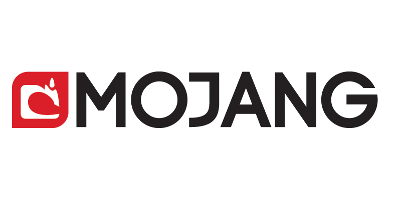

Des l'age de 7 ans, il commence a apprendre la programmation. Il participe ensuite regulierement a des concours organises par King.com. Il accede a la renommee en developpant le jeu Minecraft,presente au public a partir de 2009 en version alpha et inspire de Dwarf Fortress, Dungeon Keeper et Infiniminer. Ce jeu en vue subjective et proposant des graphismes dans un style 16-Bits, propose a l'utilisateur de collecter des ressources dans un monde ouvert pour survivre et pour realiser des structures un peu a la maniere d'un jeu de construction. Ce jeu, dont la version commerciale sort en 2011, connaitra un succes critique et commercial hors du commun pour un jeu video independant et permet a son auteur de creer sa propre entreprise, Mojang.
Apres la sortie officielle de Minecraft, Markus laisse la suite de son developpement a ses collaborateurs pour se concentrer sur un nouveau projet de jeu video, appele 0x10c (en)6 (prononcer Ten to the C). Ce jeu devrait proposer aux joueurs de controler des vaisseaux spatiaux dans un monde persistant grace a des ordinateurs programmables en DCPU-16, un langage de programmation inspire de l'ASM cree pour ce jeu. Le vaisseau etait cense etre modifiable et les joueurs pouvaient s'y deplacer en vue a la premiere personne ainsi que tirer des lasers. Le projet a ete finalement abandonne par son createur qui a declare qu'il ne comptait plus faire que de petits jeux le reste de sa carriere. Depuis, les bases du jeu ont ete reprises par la communaute, notamment avec le projet Trillek. A travers sa societe, Persson a par ailleurs co-finance Age of Wonders III, developpe par Triumph Studios et sorti en 2014. Le 15 septembre 2014, les diverses rumeurs circulant sur Internet sont confirmees : le studio de developpement Mojang, createur de Minecraft, est rachete par Microsoft pour environ 2,5 milliards de dollars (soit un peu moins de 2 milliards d'euros).Markus Persson, declare qu'il quitte totalement le developpement de Minecraft pour preserver sa sante mentale